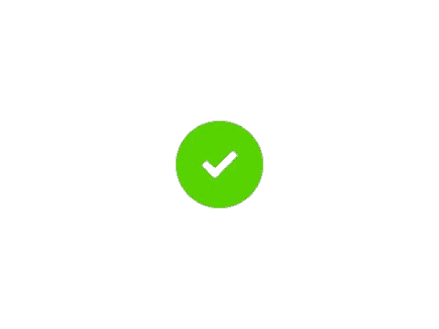

PT Hansung Cahaya Indonesia
PT Hansung Cahaya Indonesia adalah perusahaan profesional yang berlokasi di Salatiga, Jawa Tengah. Kami mengkhususkan diri dalam layanan Outsourcing Cleaning Service & Polishing Lantai Beton PT Hansung Cahaya Indonesia | Salatiga dengan standar kualitas tinggi. Dengan tim berpengalaman dan teknologi terkini, kami berkomitmen memberikan solusi pembersihan terbaik untuk kebutuhan industri dan komersial Anda.
Lebih Lanjut
Apa itu Cleaning Service?
Cleaning Service PT Hansung Cahaya Indonesia adalah layanan outsourcing pembersihan profesional yang menyediakan solusi kebersihan menyeluruh untuk berbagai kebutuhan bisnis dan industri. Dalam sistem outsourcing, perusahaan bekerja sama dengan penyedia jasa kebersihan profesional yang menyediakan tenaga kerja terlatih untuk menangani seluruh kebutuhan kebersihan perusahaan.
Lebih Lanjut
Apa itu Polishing?
Polishing Lantai Beton adalah layanan spesialis PT Hansung Cahaya Indonesia yang memberikan solusi perawatan lantai beton dengan hasil berkualitas tinggi. Poles lantai beton merupakan proses di lakukan dengan mengikis lapisan atas beton menggunakan mesin floor grinder atau mesin poles lantai beton khusus dan diamond pad bertingkat hingga mencapai tingkat kilap tertentu.
Lebih LanjutApa itu Epoxy?
Polishing Lantai Beton adalah layanan spesialis PT Hansung Cahaya Indonesia yang memberikan solusi perawatan lantai beton dengan hasil berkualitas tinggi. Poles lantai beton merupakan proses di lakukan dengan mengikis lapisan atas beton menggunakan mesin floor grinder atau mesin poles lantai beton khusus dan diamond pad bertingkat hingga mencapai tingkat kilap tertentu.
Lebih Lanjut
Solusi Profesional untuk Kebutuhan Perawatan Fasilitas Anda
PT Hansung Cahaya Indonesia menyediakan layanan cleaning service outsourcing, polishing lantai beton, dan epoxy coating dengan standar kualitas tinggi. Tim profesional kami siap memberikan solusi terbaik untuk menjaga kebersihan dan keindahan fasilitas industri maupun komersial Anda di Salatiga dan sekitarnya.
Lebih LanjutCleaning Service Outsourcing
Layanan pembersihan profesional dengan tenaga terlatih dan berpengalaman untuk menjaga kebersihan fasilitas kantor, pabrik, dan area komersial dengan standar kualitas tinggi dan sistem kerja yang efisien.
Polishing Lantai Beton
Spesialisasi polishing lantai beton menggunakan teknologi diamond pad dan mesin khusus yang menghasilkan permukaan berkilau layaknya granit dengan daya tahan optimal untuk area industri.
Epoxy Coating System
Sistem pelapisan lantai epoxy 2 komponen berkualitas tinggi yang memberikan perlindungan maksimal terhadap benturan dan bahan kimia dengan tampilan elegan yang tahan lama.
About Us
PT Hansung Cahaya Indonesia adalah penyedia solusi lengkap perawatan fasilitas profesional yang mengintegrasikan layanan cleaning service, polishing lantai beton, dan epoxy coating untuk kebutuhan industri dan komersial di Salatiga.
Who We Are
Menghadirkan Solusi Terintegrasi untuk Perawatan Fasilitas Berkualitas
PT Hansung Cahaya Indonesia hadir sebagai mitra terpercaya yang menyediakan tiga layanan utama secara terintegrasi: cleaning service outsourcing dengan tenaga profesional terlatih, polishing lantai beton menggunakan teknologi diamond pad untuk hasil berkilau layaknya granit, dan epoxy coating system untuk perlindungan maksimal lantai industri.
-

Layanan terintegrasi cleaning service, polishing lantai beton, dan epoxy coating dalam satu perusahaan - Tim profesional berpengalaman dengan peralatan modern dan teknologi terkini untuk setiap jenis layanan
- Solusi komprehensif dari pembersihan rutin hingga perawatan lantai khusus dengan standar kualitas tinggi, efisiensi waktu, dan hasil tahan lama yang memberikan nilai investasi optimal bagi klien.


Cleaning Service
PT Hansung Cahaya Indonesia di Salatiga menyediakan layanan cleaning service outsourcing profesional untuk industri dan komersial. Dengan tenaga kerja terlatih, peralatan modern, dan standar kebersihan tinggi, kami memastikan lingkungan kerja Anda selalu bersih, sehat, dan nyaman. Sistem outsourcing kami memberikan efisiensi biaya dan kualitas layanan yang konsisten.
Kebersihan Optimal, Produktivitas Maksimal
Layanan cleaning service Hansung Cahaya Indonesia meliputi pembersihan rutin, pembersihan khusus, dan perawatan fasilitas dengan standar operasional yang ketat. Tim kami berpengalaman dan bersertifikat, siap menjaga kebersihan kantor, pabrik, rumah sakit, sekolah, dan area publik lainnya.
- Tenaga kerja cleaning service terlatih, bersertifikat, dan berpengalaman dalam menangani berbagai kebutuhan kebersihan industri, komersial, dan publik.
- Penggunaan peralatan modern dan chemical ramah lingkungan sesuai standar K3, menjaga kesehatan dan keamanan lingkungan kerja.
- Jadwal pembersihan fleksibel (harian, mingguan, bulanan) sesuai kebutuhan klien, dengan supervisi dan monitoring berkala untuk menjaga kualitas layanan.
- Solusi kebersihan menyeluruh: lantai, kaca, toilet, area publik, fasilitas khusus, serta penanganan limbah dan sanitasi.
- Efisiensi biaya operasional, peningkatan produktivitas perusahaan, dan layanan konsultasi gratis untuk solusi kebersihan terbaik.
Polishing
PT Hansung Cahaya Indonesia di Salatiga menawarkan layanan Polishing Lantai Beton dengan teknologi diamond pad bertingkat dan mesin khusus untuk menghasilkan lantai yang berkilau, kuat, dan mudah dibersihkan. Cocok untuk area industri, komersial, gudang, dan showroom yang membutuhkan tampilan lantai premium.
Lantai Beton Berkilau, Investasi Jangka Panjang
Proses polishing dilakukan oleh tim profesional dengan tahapan pemeriksaan, pengikisan, pengaplikasian diamond pad bertingkat, dan finishing untuk perlindungan maksimal. Hasilnya adalah lantai yang tahan lama, mudah dirawat, dan meningkatkan estetika ruangan.
- Proses polishing bertingkat dengan mesin floor grinder dan diamond pad untuk hasil kilap maksimal dan permukaan lantai yang rata.
- Perawatan lantai beton yang memperkuat struktur, mencegah keretakan, dan memperindah tampilan ruangan.
- Lantai mudah dibersihkan, tahan terhadap noda, abrasi, beban berat, dan cocok untuk area dengan lalu lintas tinggi.
- Solusi polishing untuk pabrik, gudang, showroom, mall, rumah sakit, dan area publik lainnya yang membutuhkan tampilan premium dan daya tahan tinggi.
- Konsultasi gratis, survey lokasi, dan rekomendasi metode polishing terbaik sesuai kebutuhan klien.
Clients
Projects
Hours Of Support
Workers
Services
Solusi lengkap perawatan fasilitas profesional dengan teknologi terkini dan tim berpengalaman untuk memenuhi kebutuhan industri dan komersial Anda.
Cleaning Service Outsourcing
Layanan outsourcing tenaga kebersihan profesional yang terlatih dan berpengalaman untuk menjaga kebersihan fasilitas kantor, pabrik, gudang, dan area komersial dengan standar kualitas tinggi.
Polishing Lantai Beton
Spesialisasi jasa polishing lantai beton menggunakan teknologi diamond pad bertingkat dan mesin khusus untuk menghasilkan permukaan berkilau layaknya granit dengan daya tahan optimal.
Epoxy Coating Lantai
Aplikasi sistem pelapisan lantai epoxy 2 komponen berkualitas premium yang memberikan perlindungan maksimal terhadap benturan, bahan kimia, dan menghasilkan tampilan elegan.
Konsultasi Perawatan Lantai
Layanan konsultasi profesional untuk menentukan solusi perawatan lantai yang tepat sesuai jenis fasilitas, kondisi existing, dan kebutuhan operasional spesifik.
Maintenance Berkala
Program perawatan rutin dan berkala untuk mempertahankan hasil polishing dan coating dalam kondisi optimal dengan jadwal yang disesuaikan kebutuhan klien.
Solusi Terintegrasi
Paket layanan kombinasi cleaning service, polishing, dan epoxy coating yang dirancang khusus untuk memberikan solusi perawatan fasilitas yang komprehensif dan cost-effective.
Call To Action
Jangan biarkan kebersihan dan perawatan fasilitas mengganggu fokus bisnis Anda. Percayakan kepada PT Hansung Cahaya Indonesia dengan pengalaman dan teknologi terkini. Hubungi kami hari ini untuk mendapatkan layanan cleaning, polishing, dan epoxy coating yang akan meningkatkan kualitas lingkungan kerja Anda.
Konsultasi GratisPortfolio
Showcase proyek-proyek cleaning service, polishing lantai beton, dan epoxy coating berkualitas tinggi yang telah dipercayakan kepada PT Hansung Cahaya Indonesia oleh berbagai klien industri dan komersial.
- All
- Cleaning Service
- Polishing
- Epoxy
{kind=link}
{kind=link}
{kind=link}
{kind=link}
{kind=link}
{kind=link}
{kind=link}
{kind=link}
{kind=link}
{kind=link}
{kind=link}
{kind=link}
{kind=link}
{kind=link}
{kind=link}
{kind=link}
{kind=link}
{kind=link}
{kind=link}
{kind=link}
{kind=link}
{kind=link}
{kind=link}
{kind=link}
{kind=link}
{kind=link}
{kind=link}
Testimonials
Kepuasan pelanggan adalah prioritas kami
Frequently Asked Questions
Jawaban cepat untuk pertanyaan Anda tentang layanan kami
Apa itu teknologi Hansung Color Polishing?
Hansung Color Polishing adalah teknologi poles lantai beton dari Korea Selatan yang mampu mengubah lantai beton biasa menjadi mengkilap seperti marmer. Teknologi ini menggunakan sistem pewarnaan dan pemolesan khusus yang membuat lantai lebih kuat, tahan lama hingga 100 tahun, dan mudah perawatannya.
Berapa luas minimal untuk menggunakan jasa PT HCI?
Kami melayani proyek dengan luas minimal 1.000 meter persegi. Layanan kami cocok untuk pabrik, gudang, tempat parkir, gedung sekolah, aula, convention hall, hotel, dan bangunan komersial lainnya.
Berapa lama waktu pengerjaan poles lantai?
Waktu pengerjaan tergantung pada luas area dan kondisi lantai. Secara umum, untuk area 1.000 m² membutuhkan waktu 5-7 hari kerja. Tim kami akan memberikan estimasi waktu yang detail setelah survei lokasi.
Apakah lebih hemat dibanding memasang keramik atau granit?
Ya, sangat hemat! Biaya poles lantai beton dengan teknologi Hansung bisa menghemat ratusan juta rupiah dibandingkan memasang keramik atau granit, terutama untuk area luas. Selain itu, perawatannya juga lebih mudah dan ekonomis.
Apakah lantai yang sudah dipoles licin dan berbahaya?
Tidak. Hasil poles lantai kami mengkilap namun tetap anti-slip (tidak licin). Kami menggunakan material dan teknik khusus yang memastikan lantai aman untuk dilalui, bahkan untuk area dengan traffic tinggi.
Berapa lama daya tahan lantai yang sudah dipoles?
Dengan perawatan yang baik, lantai yang dipoles dengan teknologi Hansung Color Polishing dapat bertahan hingga 100 tahun. Lantai tetap mengkilap dan kuat meski dilalui beban berat seperti forklift atau kendaraan.
Contact
Necessitatibus eius consequatur ex aliquid fuga eum quidem sint consectetur velit
Address
JFJM+QFF, Kumpulrejo, Kec. Argomulyo, Kota Salatiga, Jawa Tengah 50734
Call Us
Nova : +62 813-9314-4342
Wili : +62 853-2525-1160
Puji : +62 857-1306-9521
Email Us
hansungcahayaindonesia@gmail.com